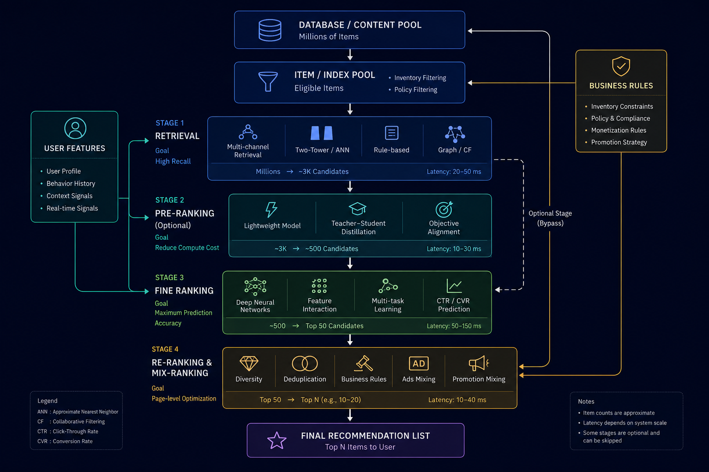

現代推薦系統的基石：深入解析「級聯架構」

如何在極短的時間內，從千萬級商品庫精準挑出最適合使用者的 10 個結果？
你是否曾想過，當你打開 YouTube、Netflix 或淘寶首頁時，系統是如何在不到一秒的時間內，精準推播你當下最想看的內容？
仔細想想，這其實是一件非常不可思議的事。這些平台上的內容庫龐大到難以想像：影片數以千萬計，商品更是動輒數億件。要在轉瞬之間從這片數據大海中，精準挑出最適合你的那十幾個結果，本身就是一項極具挑戰的工程難題。畢竟，如果對每件物品都進行精密計算來評估你的偏好，系統恐怕需要極其漫長的時間，才能吐出僅僅一頁的推薦名單。
為了突破這個挑戰，現代業界普遍採用了「級聯架構」（Cascade Architecture），來破解這個看似不可能的任務。
但在深入拆解「級聯架構」的技術細節前，我們不妨先建立對推薦系統全貌的宏觀視角，了解在一次推薦請求中，資料是經過哪些核心模組的傳遞，最終才呈現在你眼前的。
推薦系統的內容資料流：三大核心模組
雖然一個成熟的推薦系統背後往往牽涉到非常龐大且複雜的工程（例如日誌追蹤、A/B 測試等），但如果我們單純只為了回答最初拋出的問題——「系統是如何從海量的內容庫中，挑選出使用者最可能喜歡的商品，並精準呈現在他們眼前？」——那我們可以先主要關注整個資料流動環節中的「三大核心模組」：
-
商品池 / 索引池 (Item / Index Pool)：
這是整個推薦流程的「起點」，代表從全量資料庫中篩選出、當前具備推薦資格的候選商品集合。但為什麼不直接拿全量資料庫來推薦就好了呢？ 這是因為資料庫中包含大量「無法被推薦」的商品——例如已售罄無庫存、因違規暫時封禁、或是因跨國法規/物流限制無法配送至使用者所在區域的物品。這些商品雖然必須保存在資料庫中（供歷史訂單與帳務查詢），但會被排除在索引池之外，確保系統只在「有意義且合規」的商品中進行精準推薦。
-
排序模組 (Ranking Module)：
這是由演算法主導的核心戰場，採用了「召回 $\rightarrow$ 粗排 $\rightarrow$ 精排」的漏斗式篩選機制。由於全量演算極為耗時，模組必須先透過「召回」快速將範圍縮小至千級別，再利用「粗排」與「精排」進行多維度的深度評分。其最終目的，是從商品池的海量候選中，精準挑出得分最高、最符合使用者當下情境與偏好的頂級項目，傳送至最後一關的重混排模組。
-
重混排模組 (Re-Ranking & Mix-Ranking Module)：
這是內容發送至使用者眼前前的「最終把關者」。為什麼精排選出高分項目後不能直接輸出？因為在真實場景中，我們不能只看演算法的「理論最高分」，還必須兼顧瀏覽體驗與商業目標。舉例來說，若使用者當下對「運動鞋」表現出極高興趣，精排演算法給出的高分項目可能全都是運動鞋。如果直接照單全收，整個頁面就會被同類商品塞滿；這雖然滿足了短期偏好，卻犧牲了視覺多樣性，長期來看反而容易讓使用者感到厭倦，不利於平台的永續經營。此外，商業上的廣告內容也需要適時曝光，不能完全被自然推薦的高分項目擠壓。因此，為了解決這些問題，我們引入了重混排模組，並分別執行兩項核心任務：
- 重排（Re-Ranking）：導入業務規則進行體驗調控，例如將同類商品強制打散以確保多樣性、剔除近期已購項目等。
- 混排（Mix-Ranking）：處理跨來源內容的版面插播，評估廣告或活動項目是否符合門檻，並將其安插在最適當的位置。
透過重混排機制，系統才能在最終一刻產出一份兼顧使用者體驗與商業價值的推薦清單。
核心思維：以「漏斗模型」破解計算資源與精準度的矛盾
了解了內容是如何從商品池流向最終重混排模組後，我們現在可以把焦點鎖定在最核心的工程難題：推薦系統究竟是如何在中間的「排序模組」裡，於極短的時間內完成千萬級別的篩選？
解決這個難題的最關鍵鑰匙，就是我們接下來要深入探討的級聯架構（Cascade Architecture）。但在進入技術細節前，我們不妨先來思考一道情境題：
假設你需要負責一場大型企業招募，面對數百萬份履歷，目標是從中選出最適合公司的 10 名員工，你會怎麼做？
首先可以肯定的是，絕大多數人都不會讓 HR 或部門主管對每一位求職者都進行 1 小時的深度面試，因為這樣做太耗費時間與資源了。因此，最合理的做法應該是：
- 履歷篩選（初篩）：先用簡單明確的標準，快速把 100 萬人砍到剩 1,000 人。這個階段的關鍵不在於極致精準，而是極致高效。我們不需要知道這 1,000 人之中孰優孰劣，只要能以最低成本，確保留下來的人都在水準之上即可。
- 筆試與初試（複試）：接著進入進階關卡，將 1,000 人進一步縮減至 100 人。在這個階段，我們需要更細緻地評估求職者的能力與特質，並過濾掉初篩時看走眼的不適任者。
- 主管面試（決選）：最後，針對這精挑細選的 100 人進行最高層級的深度面試，投入最多時間評估，挑出最終錄取的 10 位菁英。
發現了嗎？這套海選機制其實非常適合用來解決「從海量商品庫中挑出最匹配內容」的難題——只是現在我們篩選的不是人，而是內容與商品。
而「級聯架構」，就是推薦系統領域中的這套海選機制。它將原本單一且龐大的推薦任務，拆解成多個由粗到細、層層過濾的漏斗階段：
- 越靠前的階段：處理的數據量極大，主要透過簡單模型進行快速粗篩，目標是保留潛力股、精準捕捉大方向。
- 越靠後的階段：隨著候選名單被層層收斂，系統便能投入更複雜、預測力更強的模型，對殘存項目進行精密打分與嚴格篩選。
在工業界中，這三個核心階段分別被稱為：召回、粗排與精排。以下，就讓我們順著這套流程，一步步拆解每一關是如何運作的。
三大關鍵排序階段
整個級聯架構由粗到細主要分為三大關鍵階段：
階段一：召回 (Retrieval / Recall)
- 處理規模：千萬級 -> 千級（約 1,000 ~ 3,000 個）
- 延遲限制：< 20 ms
這是整個級聯架構的第一關，也是海量內容的入口，目標只有一個：「用最短的時間大幅縮小範圍，確保所有潛在感興趣的內容都不被漏掉」。
召回階段的核心目的，在於精準建模使用者的多維度興趣（User Intent & Interest），並將其映射至商品空間中，快速檢索出高度相關的候選子集。此階段不追求複雜模型的「精細分數預測」，而是追求「興趣涵蓋的準確度與廣度」。例如：系統透過模型精準捕捉到使用者當下對「電競週邊」與「戶外攝影」感興趣，就會快速從這兩個領域的千萬級商品中，召回高度匹配的熱門滑鼠與相機配件進入候選名單，完成第一輪篩選。
- 模型複雜度與特徵：
- 傳統限制：傳統召回模型為了在極短時間內與海量商品（千萬級）進行比對，必須將「使用者」與「商品」分離建模（解耦），導致線上無法引入複雜的即時交叉特徵（Cross-Features）；在許多極致追求低延遲的場景下，甚至需依賴簡單高效的業務規則（如：熱門榜單、近 7 天同類別重複瀏覽、品牌硬性比對）進行快速篩選。
- 生成式範式突破：自從 2023 年 Google 推出以生成式 Backbone（如 TIGER）為核心的新召回範式後，這個限制被成功打破。由於模型不再需要與海量商品庫進行逐一比對，而是直接端到端「生成」目標候選商品的 Semantic ID，檢索複雜度與商品庫規模解耦。這使得召回階段得以引入大參數量的 Transformer 結構與更深入的特徵互動，擺脫了傳統「為了速度必須極度輕量化」的枷鎖。
- 主流技術實現：
- 啟發式業務規則 (Rule-based)：基於領域知識的硬性篩選（如熱門榜單、地區限制、品牌硬性比對等），作為系統的基礎兜底（Fallback）與即時特徵補充。
- 雙塔模型 (Two-Tower Model / DSSM)：將使用者與物品分別壓縮成向量，利用近似近鄰搜尋（ANN，如 Faiss、HNSW）在多維空間中進行向量距離檢索，為工業界成熟且廣泛應用的經典向量召回方案。
- 圖神經網路與協同過濾 (Graph & CF-based)：利用 ItemCF / UserCF 或 PinSage 等圖神經網路，透過使用者與物品的行為關聯圖譜，進行高階關聯興趣的召回。
- 生成式召回 (Generative Retrieval / Index-based Generation)：以 Google TIGER 為代表的新一代範式。將商品編碼為具備語義層次的 Semantic ID (SID)，由 Seq2Seq / Decoder-only 大模型直接根據使用者行為序列生成候選商品的 SID，實現大模型在召回階段的高效落地。
為了同時兼顧涵蓋度與多樣性，單一的召回管道往往力有未逮，因此業界普遍採用「多路召回策略 (Multi-channel Retrieval)」——由多條出發點不同的召回路共同決定進入下一階段的候選集：
- 出發點切入：例如一路召回專門根據使用者過往的長期偏好進行深度挖掘；另一路則專門輸出近期的熱門趨勢；甚至再加一路基於搜尋關鍵字或圖像相似度進行檢索。
- 多樣化原則：多條召回路之間最好具備實質差異。效果最好的差異是「考察維度/業務邏輯」不同（如：長期興趣 vs. 即時熱度），其次是「模型結構」不同；如果只是輸入資料略有差異，對於提升候選集質量的效果非常有限。
階段二：粗排 (Pre-Ranking / Rough Ranking)
- 處理規模：千級 -> 百級（約 300 ~ 500 個）
- 延遲限制：< 20 ms
為什麼不直接把第一關選出來的幾千個項目拿去給最強的模型打分？因為後端的深度學習模型太「重」了，如果一次處理幾千個候選，計算資源會瞬間崩潰，導致使用者頁面卡頓。因此，粗排扮演了關鍵的「算力減壓閥」與「過濾橋樑」角色。
然而，相比於召回與精排，粗排在工程上的定位其實相對尷尬：
- 粗排並非不可或缺的必備環節：前面提到粗排是為了應對龐大候選量而生的「算力減壓閥」，但召回傳遞下來的候選數量並不總是那麼龐大。在某些業務場景中，召回量本就不多，或者精排模型的算力與架構已經足夠強大、能直接承接數千個候選，此時粗排就不一定有存在的必要性。因此，粗排更像是一個可以根據系統瓶頸與資源限制彈性增減的「過濾橋樑」階段，而非固定不可少的固定環節。
- 模型結構與定位：由於粗排是作為召回與精排之間的橋樑，其功能介於兩者之間，導致它的模型結構在大多數情況下，往往只是精排模型的簡化版（如層數較少的 DNN），或者是雙塔召回模型的延伸。這種夾在中間的特性，使其在工程上較難建立自身獨特的演算法護城河。
- 核心挑戰：目標與精排對齊（知道精排喜歡什麼）：召回階段關注的是多樣性與廣泛捕捉興趣，因此不會完全順著精排的喜好走，但粗排不同——「粗排必須知道精排喜歡什麼」。如果粗排的目標與精排嚴重背離（Objective Misalignment），就極易陷入「粗排辛辛苦苦挑選出的 300~500 個商品，送至精排後預估得分都很低」的窘境。因此，現代粗排模型（如 Teacher-Student 蒸餾粗排）通常會以精排的打分與排序結果作為監督訊號，確保粗排能精準預測精排的偏好。
階段三：精排 (Ranking / Fine Ranking)
- 處理規模：百級 -> 數十個（約 50 個）
- 延遲限制：< 40 ms
這裡是整個推薦系統的「大腦」，也是技術含量最高、模型最複雜、各家科技巨頭演算法競爭最激烈的主戰場。之所以如此關鍵，是因為精排位於整個系統最尾端，直接決定了呈現給使用者的最終內容，更第一線影響著點擊率、用戶留存與商業收益（轉化率）。
經由前兩輪的過濾，候選集已經收斂到只剩幾百個精華。這時，系統終於可以不計成本地投入龐大算力，只為追求最高精度的預估！
- 模型複雜度與特徵：精排模型會吃進數百甚至數千維度的複雜特徵——包括你過去幾秒鐘點了什麼、現在的手機型號、當地天氣、影片的細節標籤，甚至你過去停留在某些頁面的微小秒數差異等。
- 主流技術實現：
- 經典深度學習範式 (DLRM Paradigm)：
- 核心思維：透過人工與模型自動構建「高階特徵交叉」與「多目標預估」。
- 代表模型：DeepFM、DIN (Deep Interest Network)、DCN、MMoE（多目標優化 CTR/CVR/停留時間）等。
- 生成式與大模型技術線 (Generative Recommendation, GR)：
- 核心思維：借鑑 LLM 的成功經驗，將推薦問題重新定義為「序列生成與超長行為建模」，驗證推薦系統的 Scaling Law。
- 代表模型與突破：
- Meta (HSTU/GR)：提出上萬億參數規模的超長序列生成式推薦模型，摒棄傳統軟 max attention，在極長用戶歷史下實現高吞吐推理。
- 美團 (MTGR)：解決了純生成式模型丟失特徵交叉的缺點，提出兼具「生成式序列架構」與「判別式特徵交叉」的混合範式，大副降低推理成本。
- 抖音/快手等 (OneTrans, RankMixer 等)：打破傳統「先編碼序列、後做特徵交叉」的兩階段限制，實現序列與特徵的統一大模型 Transformer 建模。
- 經典深度學習範式 (DLRM Paradigm)：
至此，我們已經完整走過了單一內容維度下「排序模組」的核心流程。然而在真實商業場景中，系統往往需要同時推薦多種不同性質的內容（如：自然商品、付費廣告、短影音、品牌專題）。
這就引申出一系列關鍵問題：不同性質的內容該如何公平比較？應該在什麼階段進行融合？如果某類內容表現太好，全刷同一類會發生什麼事？
這正是系統進入最終把關的第三大模組——「重混排模組 (Re-Ranking & Mix-Ranking)」 所要解決的課題。
重混排模組：從單品預測走向整體版面優化 (Re-Ranking & Mix-Ranking)
前面經歷的粗排與精排，本質上都是在做「單一內容」的分數預測——試圖回答「使用者有多大機率點擊這一個商品？」。然而，單個商品預測分數高，不代表把它們直接堆疊在一起就是一個好的推薦頁面。
因此，在重混排階段，我們更注重的是整體評分與組合效果——重排負責處理同類內容內部的「體驗與多樣性」，混排則負責處理不同類內容之間的「商業價值與版面分配」。這也是為什麼「重排」與「混排」緊密相連，因為它們共同負責了「最終版面呈現（Page-level Optimization）」。
舉個形象一點的比喻：如果說前三個排序階段是層層篩選出最優質的食材，並由主廚精心烹調出每一道料理；那麼最終的策略與混排作用，就類似於出菜前的「擺盤調味」與「菜單定製」。
-
重排（Re-ranking）——打破局部最優，兼顧使用者體驗：
精排階段算出來的「理論最高分」，並不一定等於「使用者體驗最好」的最終呈現。舉例來說，假設預測得分最高的前十名全是運動鞋，若完全仰賴精排結果，首頁將清一色全是鞋子。這看似滿足了精準度，卻嚴重忽略了多樣性。因此，「重排」的任務就是打破這種死板的「局部最優」。系統會在這階段進行打散多樣性、去重與頻控（例如過濾掉剛剛才買過的商品），確保最終呈現在使用者面前的內容既精準又豐富，不會產生視覺疲勞。
-
混排（Mixing）——平衡商業價值與內容生態：
並非所有的業務場景都需要混排。混排主要出現在需要整合「多種不同來源內容」的平台上。當系統不僅要推薦自然內容，還需要插入廣告（Ads）、營運強推商品，或跨頻道的內容時，就需要混排機制出場。混排的核心挑戰，在於如何在「不嚴重傷害使用者體驗」的前提下，將不同屬性的內容合理分配版面，從而最大化平台的整體商業收益與生態健康。
至此，我們已經完整走過了現代推薦系統最核心的架構鏈條——從海量篩選的「三大核心排序模組（粗排 $\rightarrow$ 精排 $\rightarrow$ 重排）」到全局把關的「混排模組」。這套級聯架構（Cascading Architecture）成功在「計算延遲」與「推薦精準度」之間找到了最佳平衡，讓系統得以在毫秒級的時間內，從千萬級的商品庫中為使用者交出客製化的頁面解答。
工業界真實系統的複雜度
為了讓整體脈絡更加清晰易懂，本文在論述時簡化了部分工程實務上的細節。在實際的業界推薦系統中，除了上述的核心骨幹外，通常還包含許多極其關鍵的工程環節：
- 召回結果合併與截斷 (Recall Merging & Truncation)：如何將多路召回（如雙塔、生成式 TIGER、規則等）的分數進行歸一化、去重與長度裁切。
- 硬性過濾 (Hard Filtering)：即時剔除無庫存、違規、黑名單或已購買過（針對非重複消費品）的商品。
- 商業保量與合約控量 (Guaranteed Traffic / Pacing)：針對特定品牌贊助商品或營運活動，透過流量合約（Guaranteed Delivery）強制注入保量機制。
- 權重提昇與干預 (Boosting & Suppress)：基於即時營運策略，對特定類目或季節性商品進行人工加權（Boosting）或降權（Suppress）。
這些細節構成了推薦系統在真實商業環境落地的另一半版圖，但其底層的核心邏輯，依然離不開我們本文所探討的級聯篩選與整體版面優化思維。
各階段的資源與特徵對比表
為了更直觀地理解這種架構的妥協與精妙，下表整理了資料在各階段的變化與技術差異：
| 處理階段 | 處理數量 (Item 數) | 延遲限制 | 模型複雜度與特徵維度 | 核心優化目標 |
|---|---|---|---|---|
| 召回 (Retrieval) | 10,000,000 -> 3,000 | < 20 ms | 極低。主要使用 Embedding 向量、單/雙塔與全局熱門特徵。 | 召回率 (Recall)。精準涵蓋潛在興趣方向，找回所有潛在候選。 |
| 粗排 (Pre-Ranking) | 3,000 -> 500 | < 20 ms | 中低。開始引入簡單的使用者與物品交叉特徵。 | 過濾效率。精準剔除低品質與不相關候選，為算力減壓。 |
| 精排 (Ranking) | 500 -> 50 | < 40 ms | 極高。深度神經網路、即時行為序列、超大規模稀疏特徵。 | 準確率 (AUC, LogLoss)。精準預估點擊、轉換等多重互動機率。 |
| 重排 (Re-ranking) | 50 -> 10 (展示) | < 10 ms | 策略 / Listwise。規則引擎、MMR、強化學習或 Listwise 模型。 | 體驗與生態指標。兼顧多樣性、視覺體驗與曝光公平性。 |
級聯架構的隱憂與未來挑戰
漏斗式級聯架構雖然完美解決了工程上的算力瓶頸，但它本質上是一個「妥協的產物」。隨著業務規模膨脹與模型複雜度提升，這套架構帶來了三個難以根除的結構性痛點：
-
召回決定上限，精排僅能逼近上限：
雖然業界普遍將研發重心與龐大算力放在最尾端的精排階段，但從級聯架構的資料流不難發現——精排能打分的對象，完全取決於粗排與召回供給的候選集。換句話說，「召回階段決定了本次推薦成果的品質上限，而精排只是在這個上限約束下進行逼近」。一旦召回階段因為模型過於簡單而漏掉了使用者真正感興趣的優質內容，後面再強大的精排模型也無能為力。
-
通信與 IO 搬運開銷極高，阻礙 Scaling Law 落地：
在多階段級聯架構中，資料必須跨越多個獨立模組（召回 $\rightarrow$ 粗排 $\rightarrow$ 精排 $\rightarrow$ 重混排）。每次跨模組調用，都伴隨著大量的通信開銷、特徵查詢與記憶體搬運。在極致的毫秒級延遲約束下，很大一部分的算力預算與時間成本都被浪費在「系統傳輸與資料搬運」上，而非「模型計算」。這導致傳統推薦系統很難像大型語言模型（LLM）一樣，簡單地透過擴大參數規模（Scaling Up）來享受 Scaling Law 的紅利。
-
資訊遺失與目標不一致 (Information Loss & Objective Misalignment)：
召回看重興趣涵蓋率、粗排看重過濾效率、精排看重 CTR/CVR 預估，重排又看重多樣性與商業規則。各階段優化目標彼此獨立且相互解耦，且前階段的早裁斷（Early Truncation）無法修復，容易導致整個系統收斂於局部最佳解，而非全局最優解。
邁向下一代範式：生成式檢索與全鏈路一體化（Generative Retrieval）
正是因為級聯架構存在上述固有的痛點，業界開始尋求能打破傳統「級聯漏斗」限制的新方法，推動著推薦系統朝向「端到端架構（End-to-End Architectures）」與「生成式檢索（Generative Retrieval, GR）」演進。
關於這場範式轉移背後的深層動機，以及業界（如快手 OneRec）在對齊大模型基建時所面臨的挑戰，我在專文中整理了一些個人的觀察與探討。若對這段發展脈絡感興趣，歡迎進一步閱讀：從級聯漏斗到自迴歸生成：推薦系統的範式重塑。

在此就不多贅述了，我們主要將重點聚焦於這套新架構所帶來的四大核心優勢，看看它究竟是如何統一優化目標、打破 IO 開銷枷鎖，並直接對齊大語言模型的發展範式：
- 消除級聯斷層以統一優化目標：生成式檢索將傳統的「多級漏斗」整合成單一的端到端模型，徹底解決了過去召回與排序階段因優化目標不一致而導致的「目標斷層」與資訊遺失問題，讓模型能直接且專注地為最終的使用者滿意度進行全鏈路優化。
- 極致壓縮網路與 IO 通信開銷：由於生成式檢索已整合成單一模型，因此不同級聯階段的邊界被模糊化甚至完全合併，大幅減少了多級模組間頻繁傳遞龐大特徵數據所帶來的網路延遲與 IO 開銷。系統能將省下來的時間與硬體資源，全力投入到擴大模型規模與複雜度上，以更好地捕捉使用者極其微細且動態的興趣變化。
- 對齊 LLM 範式以解鎖 Scaling Law 紅利：生成式檢索將推薦的核心問題重構為自迴歸生成任務。這意味著推薦系統能夠直接繼承大語言模型成熟的 Transformer 架構、硬體加速生態與 Scaling Law 技術紅利，使模型表現能隨著參數規模與算力投入而穩定提升。
- 模型即索引（Model-as-Index）消除候選比對瓶頸：生成式檢索透過 Semantic ID（如 RQ-Kmeans / RQ-VAE 量化碼）將百萬級商品編碼為具備語意階層的 Token 序列。Transformer 模型能直接從全局記憶中「自迴歸生成」出推薦結果，完全免去了傳統架構需要在龐大候選池（Candidate Pool）中進行逐一運算與向量比對的繁瑣步驟，並能將這些省下的檢索與比對時間，重新投入到模型的深度運算中。
總結與核心要點
Review Kit
QA Generator Prompt
You are given a set of notes or an article.
Read and understand the content, then generate approximately 20 questions.
Requested question type(s): ["mcq"]
Most questions should be drawn directly from the material, focusing on key concepts, definitions,
and core ideas, while a smaller portion can be creative or application-based,
extending the material into real-world or novel scenarios but staying conceptually grounded.
Include a mix of difficulty levels—beginner, intermediate, advanced, and professional.
For each question, provide the question number, type (conceptual, application, analytical),
difficulty, topic, the correct answer, and a brief explanation.
If the requested question format requires options (for example MCQ), include the necessary answer choices.
Focus on clarity, relevance, and meaningful application, avoiding trivial or overly obscure details.You are given a set of notes or an article.
Read and understand the content, then generate approximately 20 questions.
Requested question type(s): ["mcq"]
Most questions should be drawn directly from the material, focusing on key concepts, definitions,
and core ideas, while a smaller portion can be creative or application-based,
extending the material into real-world or novel scenarios but staying conceptually grounded.
Include a mix of difficulty levels—beginner, intermediate, advanced, and professional.
For each question, provide the question number, type (conceptual, application, analytical),
difficulty, topic, the correct answer, and a brief explanation.
If the requested question format requires options (for example MCQ), include the necessary answer choices.
Focus on clarity, relevance, and meaningful application, avoiding trivial or overly obscure details.